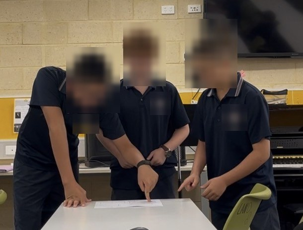
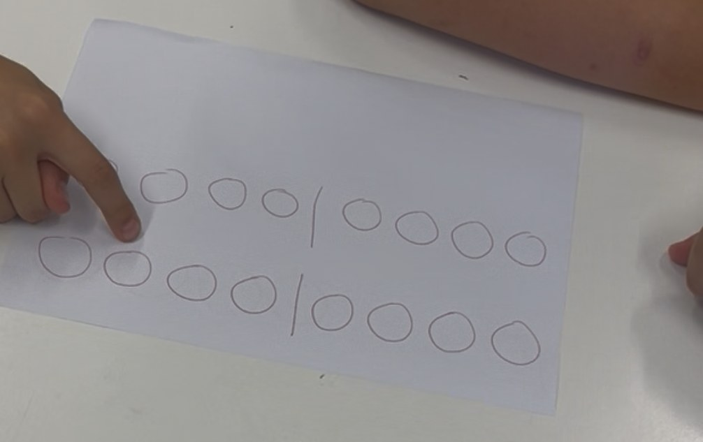
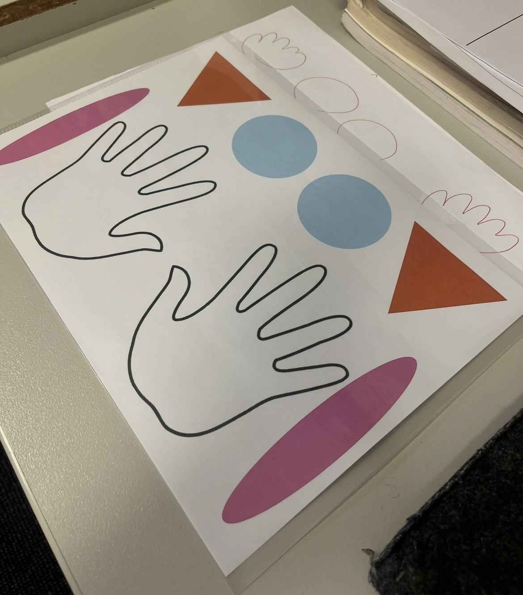

Musicianship games for the whole class or small groups. Each one has been trialled in my classroom and is ready to print or run with very little set-up.



Most of these started as a sheet of paper and a few coloured shapes. The games on this site grew out of them.
Students walk a four-beat path of symbols (circles and hands), tapping the rhythm as they go while the teacher keeps the beat on claves. A physical, whole-body way to internalise steady beat and rhythm syllables before they ever hit a page.
| Level 1 | Only hand and circle symbols |
| Level 2 | Add ti-ti |
| Level 3 | Add ti-tika, tika-ti |
| Level 4 | Add tika-tika |
A copy-back rhythm game on a hand-percussion "kit". The teacher (or a student) performs a four-beat pattern and the class copies it straight back, building from steady ta through to mirrored two-hand syncopation.
Dictate the last bar (or bar two, three, etc.) of the rhythm performed on the 4-beat circle sheet, then link into completing a solfa dictation underneath the written rhythm using individual whiteboard markers.
| Level 1 | Ta |
| Level 2 | Add ti-ti |
| Level 3 | Add tika-tika |
| Level 4 | Add ti-tika, tika-ti |
| Level 5 | Same rhythms above, but hands no longer need to mirror each other |
Each student memorises one bar of a four-bar rhythm, writes down what they heard, then the class has to physically reorder themselves into the correct sequence once the teacher reclaps it jumbled up. Listening, memory, and notation all in one activity.
Level up by playing the rhythm as a melody (rhythm in context). Play or sing the four-bar rhythm and have students complete the same activity. This gets them practising listening to "music" while still only deriving the rhythm. You can also transition this into a melodic dictation.
| Level 1 | Ta |
| Level 2 | Add ti-ti |
| Level 3 | Add tika-tika |
| Level 4 | Add ti-tika, tika-ti |
| Level 5 | Add tim-ka |
| Level 6 | Add ka-tim |
A back-and-forth improvisation game for pairs: one player claps a two-bar rhythm while the other points along the beat, then they swap, copying back the last bar each time and improvising a new one. Builds fluency with a teacher-set rhythm bank.
Optional: individual rhythm cards to place in the rhythm bank.
| Level 1 | Ta, ti-ti, tikatika |
| Level 2 | Add za |
| Level 3 | Add ti-tika (remove tikatika) |
| Level 4 | Add tika-ti (remove tikatika) |
| Level 5 | Add tim-ka (remove ti-tika, tika-ti) |
| Level 6 | Add ka-tim (remove ti-tika, tika-ti) |
| Level 7 | Add syn-co-pa (remove tim-ka, ka-tim) |
Each student is given a single rhythm card. The teacher claps a sequence, and students have eight beats to silently sort themselves into the order they heard, then clap it back together in time.
Try it with one group up the front demonstrating while the rest of the class watches, then perform the rhythms together as a class once the shuffle is complete. Swap groups and repeat.
Use the final shuffled rhythm to turn this into a melodic dictation: write the completed rhythm on the board, then sing or play a new melody over it for students to sing back. As a class, work out the starting and ending pitch and dictate the solfa on the board.
| Level 1 | Ta |
| Level 2 | Add ti-ti |
| Level 3 | Add tika-tika |
| Level 4 | Add ti-tika, tika-ti |
| Level 5 | Add tim-ka |
| Level 6 | Add ka-tim |
Four rhythm-and-solfa cards go up on the board in a random order. The class sings through them together, then has to listen, sing internally, hand-sign, and finally perform the melody back in the correct shuffled order.
Level up by extending the sequence to eight bars long.
| Level 1 | Ta and ti-ti with d r m |
| Level 2 | Ta and ti-ti with d r m s |
| Level 3 | Ta and ti-ti with d r m s l |
| Level 4 | Add tika-tika with d r m s |
| Level 5 | Add tika-tika with d r m s l |
Repeat the levels above using the la pentatonic.
Four two-bar rhythms go up on the board, numbered 1–4. The teacher claps them in a random order, and students, each "assigned" a number, have to work out and physically reorder into the code that was clapped.
Run this solely with the teacher at the board and hands up for students to call out the code, or have students write the code on post-it slips as an exit ticket.
Optional: laminated rhythm cards, individual rhythm cards for the rhythm bank, post-it slips.
| Level 1 | Ta, ti-ti, tikatika |
| Level 2 | Ti-tika, tika-ti |
| Level 3 | Tim-ka, too-oo |
| Level 4 | Syn-co-pa (ti-ta-ti) |
Students write down a short pentatonic phrase by ear, one solfa syllable per box on a dictation strip. The phrase is sung or played in secret as the “contraband” before the round timer runs out.
Run it as a knockout: anyone who scores under 4/5 sits out the next round (or swaps to scorekeeper) until only a few “smugglers” remain. Keep a running tally on the board across the term as a class leaderboard.
Use the most-missed phrase from the round as the starting point for a class composition. Students suggest a rhythm to set the solfa to, and you build out the missing two bars together.
| Level 1 | Do–re–mi only, stepwise |
| Level 2 | Add so, stepwise |
| Level 3 | Add la, stepwise |
| Level 4 | Add leaps (so–do, do–la) |
| Level 5 | Add low la and low so |
A short solfa phrase goes up on the board as the “original.” The teacher sings it back, sometimes exactly and sometimes with one note changed, and teams vote real or fake using hand signals only.
Hand the reins to a student “forger” each round. They choose (and sing, or whisper to the teacher to play) whether to keep it real or fake it, while the rest of the class votes. Rotate the forger role each round so everyone gets a turn.
Once a fake is correctly spotted, ask the class to dictate the exact note that changed and rewrite the original phrase as a two-bar rhythm, ready to clap or perform.
| Level 1 | d r m s only, one obvious substitution |
| Level 2 | Add la |
| Level 3 | Add do’ |
| Level 4 | Two notes may be changed instead of one |
| Level 5 | Add low la and so, two substitutions |
Pairs race to flip and lay out solfa cards from their “vault” in the order they hear a sung phrase. The first pair to lay out a fully correct phrase calls “vault cracked” and scores the point.
Add a rhythm layer: once a pair has the correct solfa order, they must also clap the rhythm in time before the point is awarded. Alternatively, run it as an elimination heist: the slowest correct pair each round loses a card from their vault, making future rounds harder.
Take the winning phrase from the final round and use it as that lesson’s dictation warm-up the following week, building a running “class repertoire” of cracked phrases.
| Level 1 | Do–re–mi only, 6 cards (drm repeated) |
| Level 2 | Add so, 8 cards (drms repeated) |
| Level 3 | Add la, 10 cards (drmsl repeated) |
A team-building ostinato game that tests how much rhythmic and vocal texture a group can stack before it collapses. Think Jenga, but with grooves instead of blocks.
Run it as a competition: which team holds the most layers the longest without collapsing?
Optional: claves or a metronome app to keep an audible pulse.
| Level 1 | Build to 2 layers. Card deck uses ta and ti-ti only. |
| Level 2 | Build to 3 layers. Add tika-tika to the deck. |
| Level 3 | Build to 4 layers. Add ti-tika and tika-ti to the deck. |
| Level 4 | Mid-groove swap: on the caller’s signal, two layer-owners must swap parts. |
Got another classroom favourite worth sharing? Send through the rules and it can be added here in the same format.